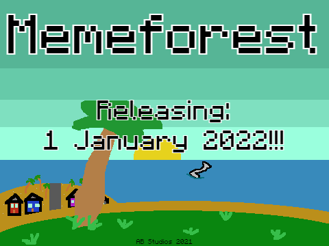

Updates And News

Release 1.3 Chinese Town Update
+Added Chinese town
+Added New Memes Such As : Ching cheng hanji, social credits
and xue hua piao piao
+Added Chinese Items Like Ching Cheng Hanji Noodles,
Bing Chilling Ice Cream And Ching Cheng Hanji Sword
+Added Currency Called Social Credits For Chinese Shop
Release 1.2 Enemies Ahead Update
+Added PC
+Added Item counter
+Shop improved
+added all music
Release 1.1 The Epik Update
+Fixed a lot of memeforest bugs
+Improved gui
+Added All Proper Endings
+Rearranged some trees and flowers
+Fixed lag
Release 1.0
+Released Memeforest On January 1 2022
Last beta/Pre-release 1
+Proper endings
+Healing
+Food
+Shop
+final boss battle
+bad ending bug fixed
+background music bug fixed
+toolmaker finished
+inventory
+sound effects
+decorations
Beta 1.1 - 1.9
+turned temporary combat system to main combat system
+fixed and finished boss battle
+Website updated
+added all music
+basic toolmaker
+mine all ores
+animated title screen with epik texts
Beta 1.0
+Created a simple and temporary combat system
+Added boss battle
+New website created (this one)
Alpha 1.9
+Repositioned and retextured buildings and rooms
+Enemy sprite added (Not with attack and ai code)
+Fixed walking slowness bug
+Added decoration
+Added new memes
+Created main menu (Old site)
Alpha 1.8
+All rooms added
+Ores
Alpha 1.7 and lower
-Information lost to time
Events and tutorial!!1
Controls
W, A, S, D = Move Player
Q = Sprint/run
Space = Hit
E = Close inventory
Bag icon = Open inventory
X = Close toolmaker window
M = Close music player window
C = Close shop window
The player have to directly touch the shop/music box and click to interact with it
Lore
Memeforest lore and iceberg 1.0
The whole lore:
A memer was testing fall damage but he got into coma.
His coma has a dream that makes everything he wants come true.
so in the coma he packed and ride a plane to japan because retro gaming is his dream.
In the memeforest island:
but his plane got shot down and fell down to the memeforest island.
After he was introduced to memeforest island he thought that the bad side
of memeforest island (grubhub empire or bad memes empire) is the one that
shot his plane down but it wasn't. He prepared to attack by preparing the
tools and also helped my the good side of memeforest island (good memes village).
He successfully defeated the bad side of the memeforest island.
but the bad side didnt do anything bad because they dont have any weapons
that can shoot down a plane. So the king of the bad side took revenge
like in the sequel of memeforest.
Who is the bad one?
But who actually shot down the plane? It was his own mind and
the good side used him to defeat the bad side.
Remains of the plane
The only remains of the plane that can be seen on the island is a computer.
The computer requires a recovery disc because the hard drive is missing.
The hard drive can be found by fishing and has 1 in 1000 chance and the
recovery disc is sold by bobux man (bobux man found the recovery disc in the beach).
The computer can unlock more recipe and used like normal computer.
This computer can unlock a lot of endings
Now the iceberg:
Entity:sprite_13
Sprite 13 is a creepypasta and has 1 in a million chance of
being in your save file in the game it can give 13 and glitched
ending the lore says that it is trying to tell you that none of these are real
Item:item_47
Item 47 is a stick that can defeat anything in less than 1 second
But if its used to defeat the boss it the 64 bits guy will go crazy
and glitch the game untill it crashed one by one the chunk will get
corrupted and has a 50% chance to spawn Sprite 13 on all memeforest
save. It is not recommended to use item 47
Hitbox
Hitbox was a transparent sprite that detects collisions and detect
Interactive sprites now its not used anymore but still moves while being
invisible. It will not affect gameplay too much
Sequel 3
Sequel 3 doesn't exist in the plans and and all memeforest wiki
but it has sprite 13 in the game. The came is disturbing so it
is not recommended to play it
Abandoned game maker project
There is a game maker edition of memeforest made as a joke from
the developers but the game is canceled
Taken from arkacraft islands
The color for the menu bar of memeforest is the same one as the
one in Arkacraft islands And some memeforest assets are added into
Arkacraft islands and it is a tree
Memeforest action figure
An action figure of memeforest player and villagers is a good idea.
But it is forgotten
Unused sprites
There are some unused sprites in memeforest and some is in the lore
Cancelled logo
There was a logo where the meme letter for the logo is Minecraft
villagers shaped as the letter meme instead of memeforest villagers
Disc
Disc is a weird music. But its not even a music some people say it's
sprite 13 recording but its just a sound of the memer in coma in the
hospital.
Kahonsol
The developers of memeforest made a gameconsole from phone and it run
game made from that developer it runs memeforest but the controls
keeps stopping. Wierd